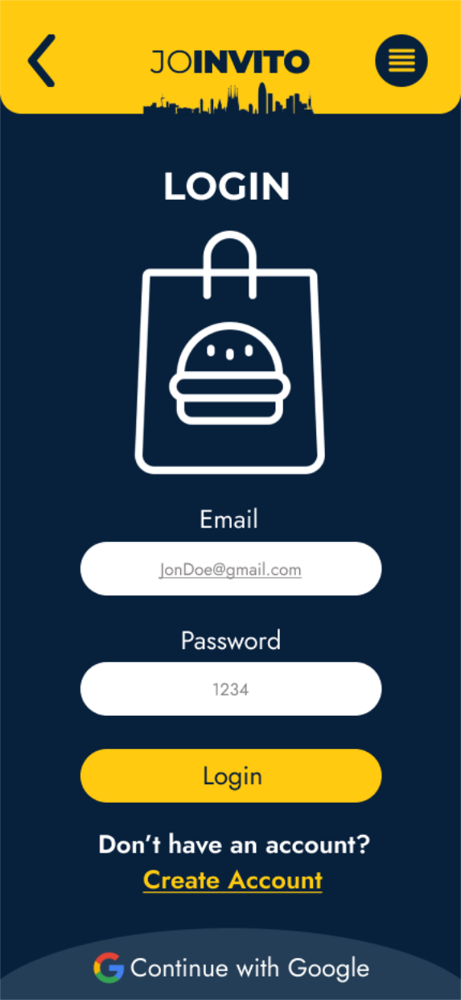
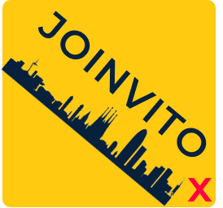

MISION Y VISION
El proyecto "JOINVITO" se sitúa en el corazón de Barcelona, España, como un pionero en la visión de la Economía Social y Solidaria (ESS). Nuestro propósito va más allá de la mera distribución de alimentos; buscamos transformar el tejido social y económico a través de la innovación tecnológica y la empatía social.
VISIÓN
Imaginamos una Barcelona más justa y sostenible, donde la tecnología y la solidaridad se fusionan en una plataforma web de vanguardia. Esta plataforma no solo coordina a un grupo de riders voluntarios, sino que se convierte en el epicentro de la acción comunitaria, conectando de manera eficiente la generosidad de los donantes con las necesidades reales de la comunidad.
MISIÓN
Desarrollar una plataforma web avanzada que no solo maximice la eficiencia en la distribución de alimentos y minimice el desperdicio, sino que también sea un faro de conexión entre las buenas intenciones de los donantes y las necesidades apremiantes de la sociedad. En nuestro empeño, estamos moldeando el futuro económico hacia la solidaridad, la equidad y la sostenibilidad.
VALORES Y BENEFICIOS
VALORES
Reducción del Desperdicio Alimentario: Transformamos los alimentos excedentes en recursos valiosos para reducir el desperdicio y promover la sostenibilidad ambiental.
Apoyo a Comunidades Vulnerables: No solo proporcionamos alimentos, sino que extendemos una mano solidaria a aquellos en situaciones de necesidad, incluyendo personas sin hogar y familias en riesgo de exclusión social.
Sensibilización Comunitaria: Elevamos la conciencia sobre el desperdicio alimentario y fomentamos la solidaridad como un principio fundamental en nuestra sociedad.
Empoderamiento de Voluntarios: Más que simples riders, son agentes de cambio. Les ofrecemos una plataforma para contribuir significativamente, brindándoles un sentido de propósito y comunidad.
BENEFICIOS ESPERADOS
El proyecto busca reducir el hambre, mejorar las condiciones de vida y promover la sostenibilidad al disminuir el desperdicio de alimentos. Además, tiene como objetivo fortalecer la cohesión comunitaria mediante la colaboración y el apoyo mutuo.
Nos sumamos a la Economía Social y Solidaria en Barcelona, alineándonos con más de 200 iniciativas. Abordamos la pobreza y la desigualdad, respetando el entorno, para construir una sociedad equitativa y sostenible
TIPOGRAFÍA
Para para los títulos nos basamos en considerar la legibilidad, neutralidad y jerarquía visual para mejorar la experiencia general de los usuarios que visitan la página web.
MONSERRAT
Contraste: La elección de Montserrat Bold para los títulos agrega contraste visual con respecto al texto normal. Esto ayuda a jerarquizar la información y a guiar a los visitantes a través de la página.
Variedad estética: Es una fuente sans-serif, pero tiene un estilo más distintivo y moderno. Al usarla en Bold podemos añadir un toque visual atractivo y diferenciar claramente los encabezados del cuerpo del texto.
Consistencia: Al mantenerlo en Regular para los títulos más pequeños o subtítulos, mantenemos una coherencia estilística en toda la página. Dando una apariencia profesional y una experiencia de usuario uniforme.
JOST
JOST
Aa
Legibilidad: Es una fuente sans-serif que ofrece una excelente legibilidad en tamaños de texto pequeños.
Estilo neutral:Tiene un estilo moderno y neutral, lo que lo hace adecuado para transmitir información de manera clara y sin distracciones. Permite que el texto principal sea fácil de leer para mejorar la accesibilidad y la comprensión del contenido.
MALOS USOS
MONSERRAT
FALTA DE JERARQUÍA
sin una
jerarquía clara
Es abrumadora
JOST
Tamaño inapropiado
Demasiado pequeño
Problemas de legibilidad
USO EXCESIVO DE NEGRITA
RESTA LEGIBILIDAD HACE QUE SEA PESADO A LA VISTA
COLOR
La combinación de estos colores permite crear un diseño web equilibrado y atractivo, donde cada color desempeña un papel específico. La paleta refleja una imagen profesional y confiable, con toques de energía positiva y una conexión con la naturaleza.
Por medio de este color representaremos la amabilidad y calidez que los usuarios de nuestra web desean transmitir con la ayuda que desean aportar, además siendo entusiasta para darles más motivación al utilizar la app.
COLOR PRINCIPAL / LLAMADO A LA ATENCION
#07203C
Queremos transmitir un sentimiento de profesionalidad al dar confianza con nuestra app; esto justamente permitirá a los usuarios una mayor seguridad al confiar en nosotros, además, este color nos permite un buen contraste, para ayudar a la motivación.
COLOR SECUNDARIO / TEXTO
#243E57
Este es un color versátil, el cual nos permite utilizarlo para destacar contenido visual, así como también para el texto. Además, al tener un matiz de verde, transmitirá naturaleza, pensando en la sostenibilidad que daremos, aporta un toque moderno evitando que sea rígido.
ERROR
#DD052A
Es un color que es clásico para la identificación de errores; al ser fuerte y llamativo permitirá su fácil visualización indicando que requiere su atención.
TEXTO
#FFFFFF
Nos permite tener neutralidad y versatilidad en la web, para generar buenos contrastes con los demás colores, además de una fácil adaptabilidad, aportando con esto dar el mensaje requerido de forma clara y directa.
TEORIA 60-30-10 % EN COLOR
60% de Color Principal:El color principal, un tono de azul oscuro, ocupa el 60% del diseño, estableciendo una base sólida y profesional para toda la interfaz. Este color proporciona un fondo coherente y transmite confianza y estabilidad a los usuarios.
30% de Color Secundario Textos:El color secundario, un tono de azul oscuro-verdoso, representa el 30% del diseño y se utiliza tanto en textos como en otros elementos clave.
10% de Color de Acento:El color de acento, un tono vibrante de amarillo, ocupa el 10% del diseño y se emplea en elementos selectos, como el menú. Este color no solo agrega energía positiva y entusiasmo, sino que también destaca áreas específicas, atrayendo la atención del usuario de manera estratégica.
LOGO
Skyline de Barcelona
Identidad local: La inclusión del skyline es un elemento para transmitir la identidad local. Permite resonar con el público objetivo que se identifica con la ciudad y crear una conexión emocional.
Contexto visual: El skyline proporciona contexto visual y ayudar a los usuarios a asociar rápidamente la aplicación con la ubicación geográfica
CLEARSPACE
Definimos espacios del logo para evitar que otros elementos ser sobrepongan encima de este.
Diseño del nombre
El logo de JOINVITO mediante la aplicación de simetría se realiza la división de la palabra en dos partes: "JO" y "INVITO".
Esta elección crea una armonía visual, aportando equilibrio al diseño. Además, la tipografía Monstserrat regular para "JO" ofrece claridad y legibilidad, mientras que la negrita utilizada en "INVITO" enfatiza la invitación de manera audaz.
Esta combinación refleja la esencia de nuestra marca, transmitiendo confianza y accesibilidad.
MALOS USOS
